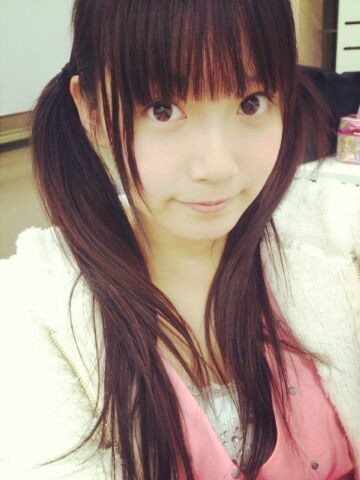
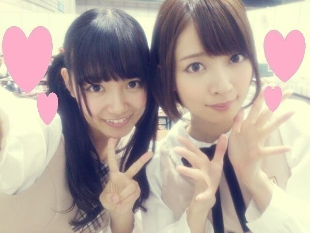
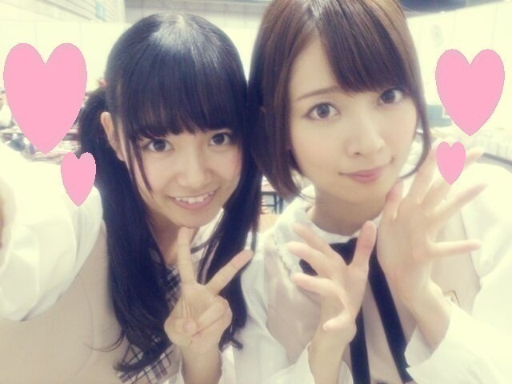

| 2013/12 09 Mon | ひめたん(*>ω<*)そ の378 |

自メイクが様になってきたと
最近おねーさんたちが褒めてくれる(＊^O^＊)
ヘアはなんか微妙、だって？
しゃーないねんそれレッスン直後やねん
最近はひめたん結び＜ツインやねん
でもツイン辞めてストレートにしたらー？とも
よく言われる...そんなー......
今回は書くことがいぱーいあるぞー
まずは横浜全国握手会
ありがとうございました( ^O^ )
聞くところによると
朝早くからたくさんの方が
待っていてくださったと聞いて......
風邪とか引いてないですかー？
本当に無理はしないでね(´；；｀)
それだけ楽しみにしてくれてたんだよね
ありがとうございましたっ
私たち期待に応えるライブできてたかなー
ひめたんが歌ったのは
◎バレッタ
◎やさしさとは
◎月の大きさ
◎そんなバカな・・・
そうなんですーなんと
参加楽曲全部披露させていただきましたのです！
「やさしさとは」「そんなバカな・・・」は
パフォーマンス初披露でしたが
いかがでしたかー( ^ω^ )？
「やさしさとは」は
良い曲！って思ってもらいたくて
たくさん練習しました
やっぱりユニット曲ってのは
自分にとってかわいい存在なので。
「そんなバカな・・・」は
ダンスやばい激しいです！
みんなが筋肉痛ーて言ってたのはこれです！
MVの世界観そのまんまなのー♪
いやー踊ってて楽しいですよー
そして握手会は
ななみん (橋本奈々未ちゃん)と
ペアでしたっ

ななみん(´_ゝ｀)
ななみんファンのみなさん
仲良くしてくださって
ありがとうございました！
やさしい方ばっかりで
終始ほのぼのレーンだった(´_ゝ｀)＊
ななみんびーむ かわいかったー！
そしてひめきゅんさん
ありがとうございました！
はじめましての方もたくさんいたみたい
会いに来てくれて
本当に嬉しいよー♪♪
お久しぶりのみなさんお待たせしましたねー
いつもありがとうっ
初選抜おめでとーって
たくさんお祝いしてもらえて
間近でありがとうって伝えられてよかった！
雑誌みたよー
ナタリーみたよーとか
乃木どこみたよーとか
乃木どこのバスケは大丈夫かーとか(笑)
見た通り元気です(〃ω〃)/
そして昨日はさらに
トレカのバインダーお渡し会
15レーンで
ななせまる (西野七瀬ちゃん)と
お渡ししました
ななせまるありがとー♪
15レーンのみなさん
ありがとうございました( ´ ▽ ` )
そんな感じで昨日は
結構な長丁場でございました
会場来てくださったみなさんお疲れさまでした！
せっかくの日曜日なのに
リフレッシュするどころか
ハードな１日にさせてしまった(´・ω・｀)
でも乃木充できたよねっ
お勤めのみなさんも学生さんも
今朝はちゃんと起きれたかしらー？
さらに乃木どこは
2013年反省会でした*\(^o^)/*
観てくださったみなさんありがとー！
ひとつ言わせてください！
今だからいえるけど
階段から落下したのはまーじで痛かったの！
なんかVTR観たら
そーでもなさそうだけどさ！
まあステージにいる以上
うずくまるわけにもいかないので
痛そうに見えないほうがいいのかなー
いくちゃん (生田絵梨花ちゃん)との
お泊り会は前にブログで書いたけど
そーゆー経緯があったのねー
中３組エピソードが話せて
いやー良かった良かった(｀・ω・´)
ちなみにるんるん(斎藤ちはるちゃん)は
次の日に予定があったから
今回は来れなかったんだよねー
次は３人でお泊りしようねっ
いやあ。今日は記事が長い。
ここまで読んでて疲れたよねー
もうちょっとだけ付き合ってってー(´ω`)
最後にお知らせ◎
乃木坂ちゃん初の
LIVE DVDが発売されることになりました！
2013/2/22に
幕張メッセイベントホールで行われた
デビュー一周年ライブが収録されています
忘れもしない制服のマネキン......
ぜひチェックしてみてください☆
自メイクが様になってきたと
最近おねーさんたちが褒めてくれる(＊^O^＊)
ヘアはなんか微妙、だって？
しゃーないねんそれレッスン直後やねん
最近はひめたん結び＜ツインやねん
でもツイン辞めてストレートにしたらー？とも
よく言われる...そんなー......
今回は書くことがいぱーいあるぞー
まずは横浜全国握手会
ありがとうございました( ^O^ )
聞くところによると
朝早くからたくさんの方が
待っていてくださったと聞いて......
風邪とか引いてないですかー？
本当に無理はしないでね(´；；｀)
それだけ楽しみにしてくれてたんだよね
ありがとうございましたっ
私たち期待に応えるライブできてたかなー
ひめたんが歌ったのは
◎バレッタ
◎やさしさとは
◎月の大きさ
◎そんなバカな・・・
そうなんですーなんと
参加楽曲全部披露させていただきましたのです！
「やさしさとは」「そんなバカな・・・」は
パフォーマンス初披露でしたが
いかがでしたかー( ^ω^ )？
「やさしさとは」は
良い曲！って思ってもらいたくて
たくさん練習しました
やっぱりユニット曲ってのは
自分にとってかわいい存在なので。
「そんなバカな・・・」は
ダンスやばい激しいです！
みんなが筋肉痛ーて言ってたのはこれです！
MVの世界観そのまんまなのー♪
いやー踊ってて楽しいですよー
そして握手会は
ななみん (橋本奈々未ちゃん)と
ペアでしたっ

ななみん(´_ゝ｀)
ななみんファンのみなさん
仲良くしてくださって
ありがとうございました！
やさしい方ばっかりで
終始ほのぼのレーンだった(´_ゝ｀)＊
ななみんびーむ かわいかったー！
そしてひめきゅんさん
ありがとうございました！
はじめましての方もたくさんいたみたい
会いに来てくれて
本当に嬉しいよー♪♪
お久しぶりのみなさんお待たせしましたねー
いつもありがとうっ
初選抜おめでとーって
たくさんお祝いしてもらえて
間近でありがとうって伝えられてよかった！
雑誌みたよー
ナタリーみたよーとか
乃木どこみたよーとか
乃木どこのバスケは大丈夫かーとか(笑)
見た通り元気です(〃ω〃)/
そして昨日はさらに
トレカのバインダーお渡し会
15レーンで
ななせまる (西野七瀬ちゃん)と
お渡ししました
ななせまるありがとー♪
15レーンのみなさん
ありがとうございました( ´ ▽ ` )
そんな感じで昨日は
結構な長丁場でございました
会場来てくださったみなさんお疲れさまでした！
せっかくの日曜日なのに
リフレッシュするどころか
ハードな１日にさせてしまった(´・ω・｀)
でも乃木充できたよねっ
お勤めのみなさんも学生さんも
今朝はちゃんと起きれたかしらー？
さらに乃木どこは
2013年反省会でした*\(^o^)/*
観てくださったみなさんありがとー！
ひとつ言わせてください！
今だからいえるけど
階段から落下したのはまーじで痛かったの！
なんかVTR観たら
そーでもなさそうだけどさ！
まあステージにいる以上
うずくまるわけにもいかないので
痛そうに見えないほうがいいのかなー
いくちゃん (生田絵梨花ちゃん)との
お泊り会は前にブログで書いたけど
そーゆー経緯があったのねー
中３組エピソードが話せて
いやー良かった良かった(｀・ω・´)
ちなみにるんるん(斎藤ちはるちゃん)は
次の日に予定があったから
今回は来れなかったんだよねー
次は３人でお泊りしようねっ
いやあ。今日は記事が長い。
ここまで読んでて疲れたよねー
もうちょっとだけ付き合ってってー(´ω`)
最後にお知らせ◎
乃木坂ちゃん初の
LIVE DVDが発売されることになりました！
2013/2/22に
幕張メッセイベントホールで行われた
デビュー一周年ライブが収録されています
忘れもしない制服のマネキン......
ぜひチェックしてみてください☆

 マックで一番好きなハンバーガーは何ですか？？
マックで一番好きなハンバーガーは何ですか？？
チーズバーガー＊
歴代の制服の中で1番好きなのはどれ？？
7thの制服ー！
かわいいー((o(。・ω・。)o))
1stの制服もなかなか。
ひめたんが乃奇坂女子学園に転校したとしたら、
超体育会系のアイドル部に入る？
それとも先生オヌヌメの茶道部に入る？
アイドル部楽しそうだよねー♪♪
茶道部は正座ができないから
きっと努まらない......
サンタって煙突のない家の場合
どこから入るんですかね？
ぴんぽーんって入るんじゃない？
いやよく知らんけどさー
一軒家さんのお宅なら穴掘ったりね！
いつもコメントたくさん
ありがとうございますっ
マフラーの巻き方は
いろいろ教えてくださったから
ちょっと試してみるねー♪♪
次回はひめたん46やるね！
◎12/9 Sound Room 23時59分~
ぜひチェックしてくださいっ
(＊´・ω・＊)
コメント(375)
2013/12/09 23:54